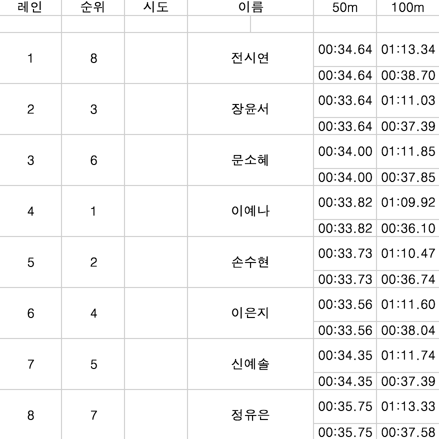

남자 일반 배영 200m
여자 일반 배영 200m
남자 고등 접영 50m
남자 일반 접영 50m
여자 고등 접영 50m
여자 일반 접영 50m
남자 고등 평영 100m
남자 일반 평영 100m
여자 고등 평영 100m
여자 일반 평영 100m
남자 일반 자유 1500m
여자 일반 자유 1500m
남자 고등 계영 800m
여자 고등 계영 800m
남자 일반 계영 800m
여자 일반 계영 800m
여자 고등 자유 800m
남자 고등 접영 200m
여자 고등 접영 200m
남자 일반 접영 200m
여자 일반 접영 200m
남자 고등 자유 50m
여자 고등 자유 50m
남자 일반 자유 50m
여자 일반 자유 50m
Published with GitBook
여자 고등 평영 100m
여자 고등부 평영 100m 결승

results matching "
"
No results matching "
"